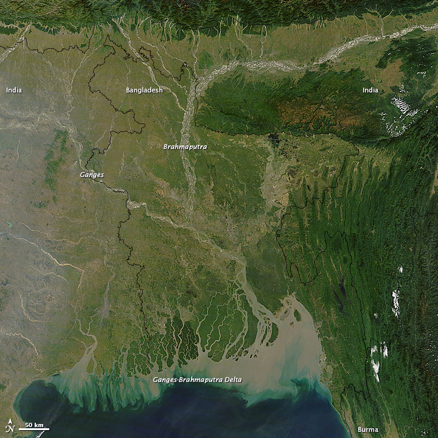
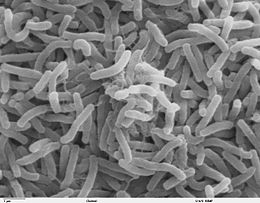

Historique de la maladie
Au 19ème siècle, le choléra s'est répandu dans le monde entier à partir de son résevoir original, dans le delta du Gange en Inde :
Les 6 pandémies qui ont eu lieu par la suite ont tué des millions de personnes sur tout les continents. La pandémie actuelle (la 7ème) a démarré en Asie du Sud, en 1961, a atteint l'Afrique en 1971, puis les Amériques en 1991. Le choléra est désormais endémique dans de nombreux pays.
Symptômes de la maladie
Parmi les symptômes de la maladie on peut compter, des diarrhées aqueuse aiguë sévère. Après contamination, les symptômes prennent entre 12 heures et 5 jours pour se déclarer. A cause de ces diarrhées, une personne atteinte de Choléra peut subir une déshydratation sévère et en mourrir si elle n'est pas prise en charge.
Transmission de la maladie
La maladie se transmet en général par une eau contaminée par des selles humaines. L'ingestion d'aliments contaminés peut aussi être un facteur de transmission. Notamment les fruits de mer ou les crustacés crus ou cuits de façon insuffisante (exposition à l'eau contaminées plus importante que les autres espèces).
Fonctionnement de la maladie, propriétés
La bactérie Vibrio Cholerae est la bactérie responsable du Choléra. Il s'agit d'une bactérie en forme de bacille comme on peut le voir sur cette image :
Le choléra est une maladie exclusivement humaine (les animaux non-humains ne peuvent pas être atteint de la maladie). Cependant ils peuvent porter la maladie. Le Vibrio Cholerae contamine majoritairement et massivement les selles. Il faut ingérer une grande quantité de bactéries pour être contaminé car la majorité des bactéries sont détruites dans l'estomac dans l'acidité gastrique. Les populations en états de sous-nutrition sont plus vulnérables car ils ont moins ou pas d'acidité gastrique et une quantité moindre de bactéries ingérées suffit alors pour être atteint. L'acidité gastrique permet à quelqu'un ayant ingéré des bactéries Vibrio Cholerae de les éliminer, pour cela le pH doit être maintenu entre 1,2 et 1,8. Cependant à fortes doses (plus de 10^7 bactéries par mL), les bactéries traversent la barrière acide et restent attachés à la muqueuse intestinale d'où elles sécrétent une toxine qui va amplifier le phénomène de sortie d'eau, de sodium et de chlore des entérocytes.
Traitement de la maladie
Malgré les apparences la maladie est facile à traiter. Un sujet peut être guéri en lui administrant des sels de réhydratation orale dissous dans de l'eau potable (1L). On peut répéter cette opération jusqu'à 6 fois (6L) pour traiter une déshydratation modérée chez un patient adulte le premier jour. Chez les patients gravement déshydratés, on ne peut pas appliquer ce traitement par voie orale (boire). Le traitement est alors appliqué par voie intraveineuse (perfusion). En plus de cela, les patients gravement déshydratés peuvent se voir fournir des antibiotiques adaptés pour raccourcir la durée de la diarrhée, diminuer les quantités de liquide de réhydratation nécessaire et écouter la durée de l'excrétion des bactéries dans leur selles.